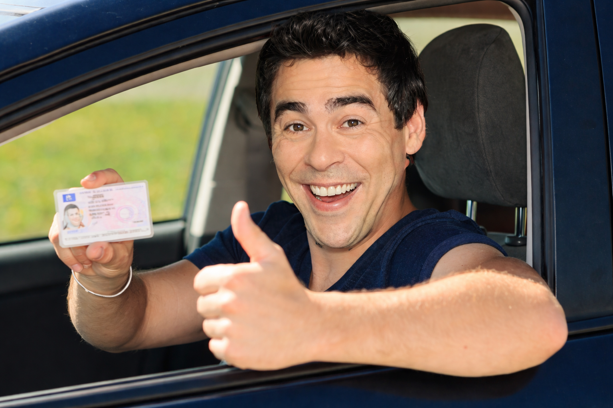
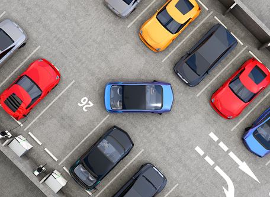
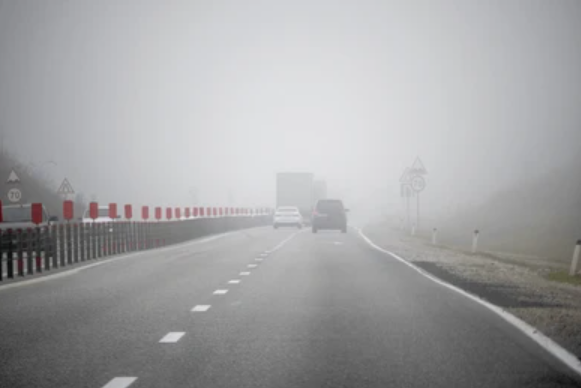

1. Respetar siempre las normas de tráfico.
2. Mantener la atención en la conducción en todo momento.
3. Evitar distracciones como el móvil.
4. Adaptar la conducción al estado de la vía.

1. Respetar siempre las normas de tráfico.
2. Mantener la atención en la conducción en todo momento.
3. Evitar distracciones como el móvil.
4. Adaptar la conducción al estado de la vía.
Revisar el vehículo (luces, frenos, neumáticos).
Ajustar espejos, asiento y cinturón.
Planificar la ruta con antelación.
Llevar carnet de conducir, permiso de circulación y seguro.
Verificar que toda la documentación esté en regla.

Mantener distancia de seguridad.
Usar intermitentes en todas las maniobras.
Respetar límites de velocidad.
Conducir de forma suave y anticipada.

Reducir velocidad en lluvia, niebla o nieve.
Aumentar la distancia de seguridad.
Encender luces en condiciones de baja visibilidad.

Estacionar correctamente el vehículo.
Apagar el motor y las luces.
Verificar que el vehículo queda seguro.

Descansar adecuadamente antes de viajes largos.
No conducir bajo efectos del alcohol o drogas.
Ser paciente y respetuoso con otros usuarios.
Anticiparse a posibles peligros en la vía.